For Mrs. Sadhana Waikar · 3BHK (converted 4BHK) · 26th floor (top), east balcony · July 2026 · Budget frame ₹20 lakh ±
The designer's PDF was re-measured by vector extraction: every drawing callout is in inches (e.g. 78⅜″), scale resolved to 18.69 mm/pt across 25+ dimension lines (±0.1%). The earlier AI specification used a wrong scale — all its rooms are ~4% small, and the mandir, master bedroom and balcony geometries were materially wrong.
| Space | Size (m) | Notes |
|---|---|---|
| Living hall + north band | 4.77 × 5.03 + 3.64 × 1.88 | North band = merged ex-room strip; water wall on north wall |
| Dining (open) | 2.82 × 3.07 | West mirror as drawn — keep |
| Mandir room | 1.73 × 1.63 | Real walk-in room, NE; door from living band; south opening to balcony; east window |
| Attunements room | 2.28 × 1.88 | Treatment table does NOT fit with clearance — seated/floor practice by design |
| Master bedroom | 3.42 × 4.73 | Drawing gave it no wardrobe — resolved below |
| Son's bedroom | 3.06 × 3.98 | Camouflage bath door retained |
| Study / 3rd bedroom | ~2.6–3.0 × 5.0 | SITE-VERIFY before any joinery |
| Kitchen | ~3.3 × 2.69 | Reface only — carcass retained |
| Balcony | 1.33 clear × 5.07 | Narrower than earlier spec (1.71) — swing only at south dead-end, with society NOC |
Full database, openings, window bands and site-verify checklist: verify/DIMENSIONS.md. Laser-measure everything before ordering — the drawing is marked NOT TO SCALE.
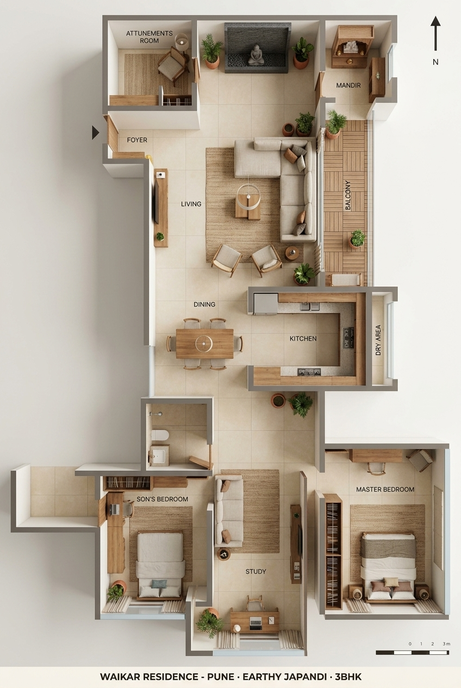
Presentation plan (photoreal illustration, generated from the verified schematic below — measurements always govern).
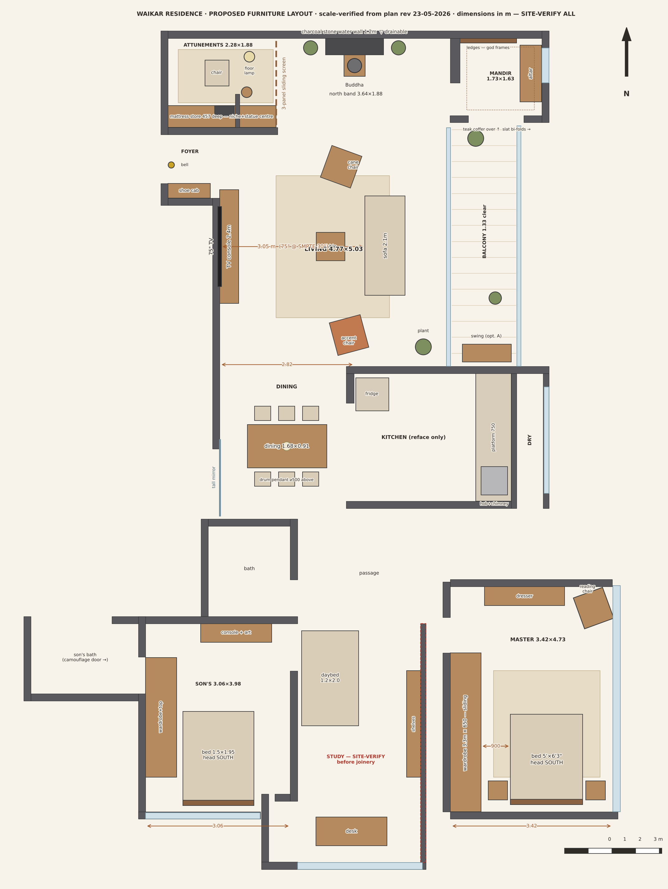
Proposed furniture layout, to scale, north up. Key clearances verified: 75″ TV at 3.05m (SMPTE 30°), dining aisles ≥950mm, master wardrobe aisle ~900mm, elder sit-rise zone before mandir, balcony walk preserved (swing confined to dead-end).
Photoreal visualizations: each is generated from a dimension-verified 3D base model of this flat (camera, walls, openings and furniture positions locked), then rendered photoreal. Treat finishes as the design intent; treat dimensions in DIMENSIONS.md as the authority.
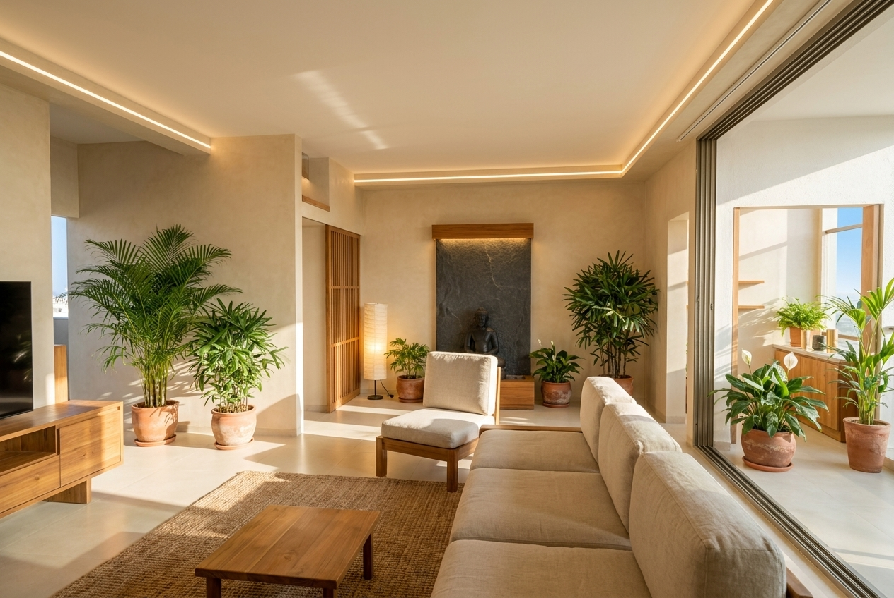
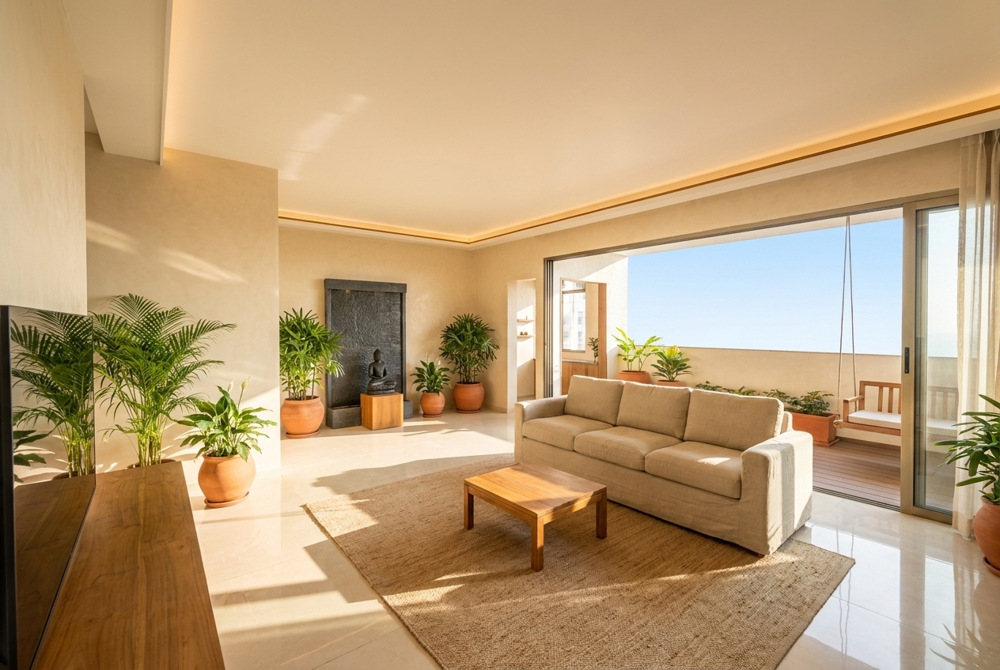
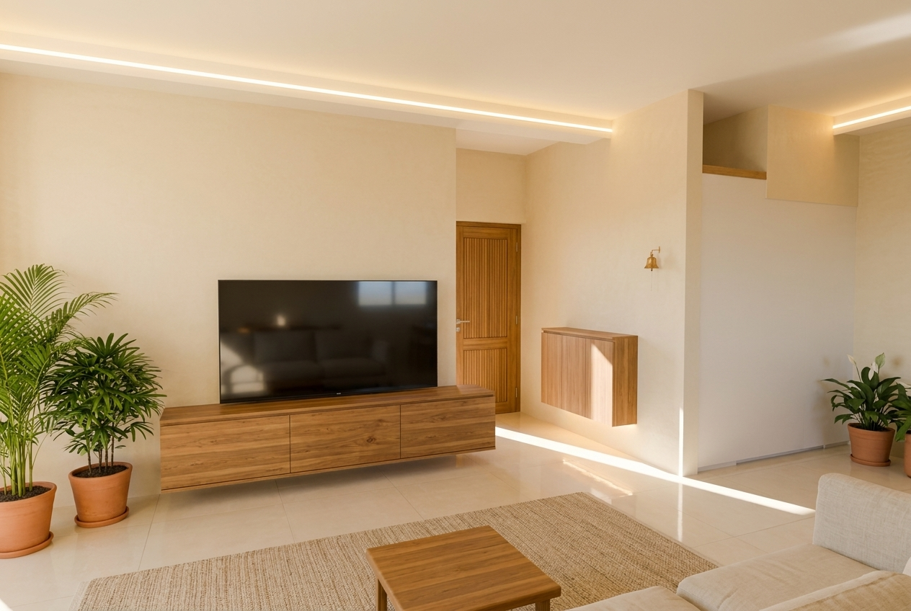
75″ confirmed by geometry (30.9° at 3.05m = SMPTE ideal; a 65″ would sit under-immersive at 27°). Teak console 2400×400×450 with closed storage; conduits chased before lime plaster; screen centre 1020mm.
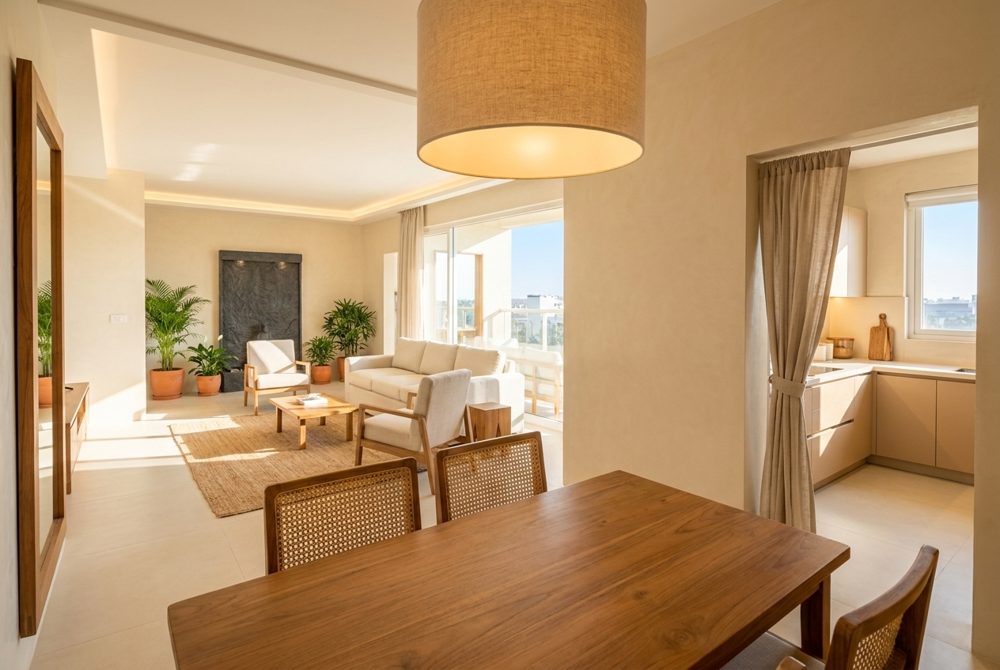
Teak table 1680×910 (as drawn), six cane-seat chairs, one ⌀500 linen drum pendant, tall teak-framed mirror on west wall (drawing's best move — kept).
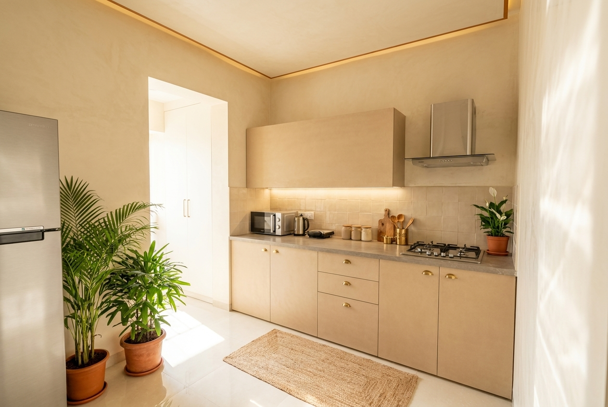
Existing platform and carcass retained; new oat suede-matte fronts with brass cup pulls, matte ceramic backsplash, honed grey counter, chimney over hob. Open entry from dining (linen curtain only). Micro/mixer/air-fryer live on the platform — no tall unit.
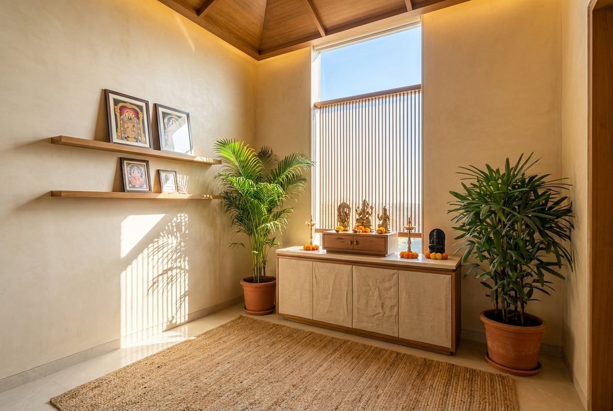
Teak altar platform (750mm, samagri drawers, stone insert under diya), east window slat-screened so morning light rises behind the deities; lean-ledges for god frames; tapered teak coffer with concealed warm strip; slat bi-folds to balcony for diya ventilation.
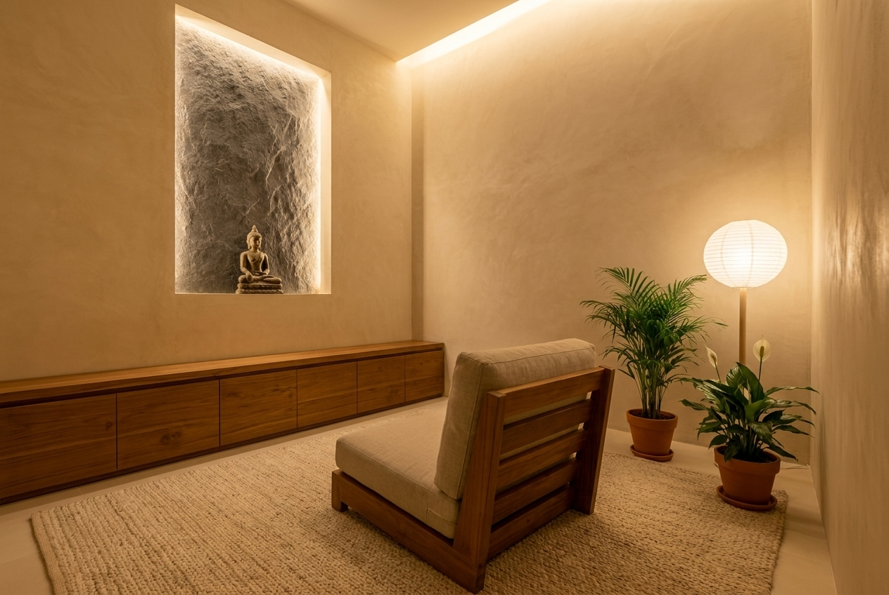
Seated + floor practice (verified: table can't fit). South mattress-store with charcoal-stone niche as focal; armless recipient chair; 3-panel sliding screen to living; cove + lamp only, ≤50 lux session scene. Never becomes a guest room/store/office.
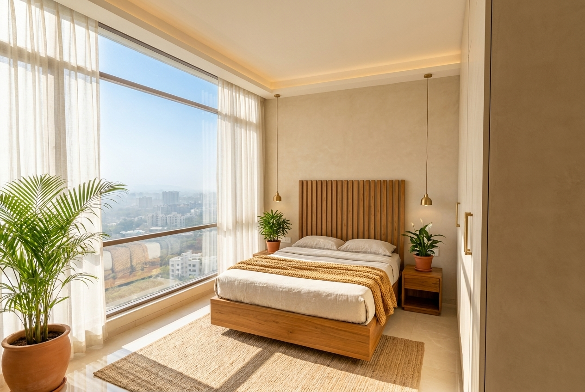
Correction: drawing had no wardrobe here. Bed head moved to SOUTH (vastu-best), full west wall becomes a 3.3m × 650 sliding wardrobe (mirror inside a shutter, safe bolted in base), teak slat headboard, pendant reading lights, cane reading chair at the east window, night-path motion lighting.
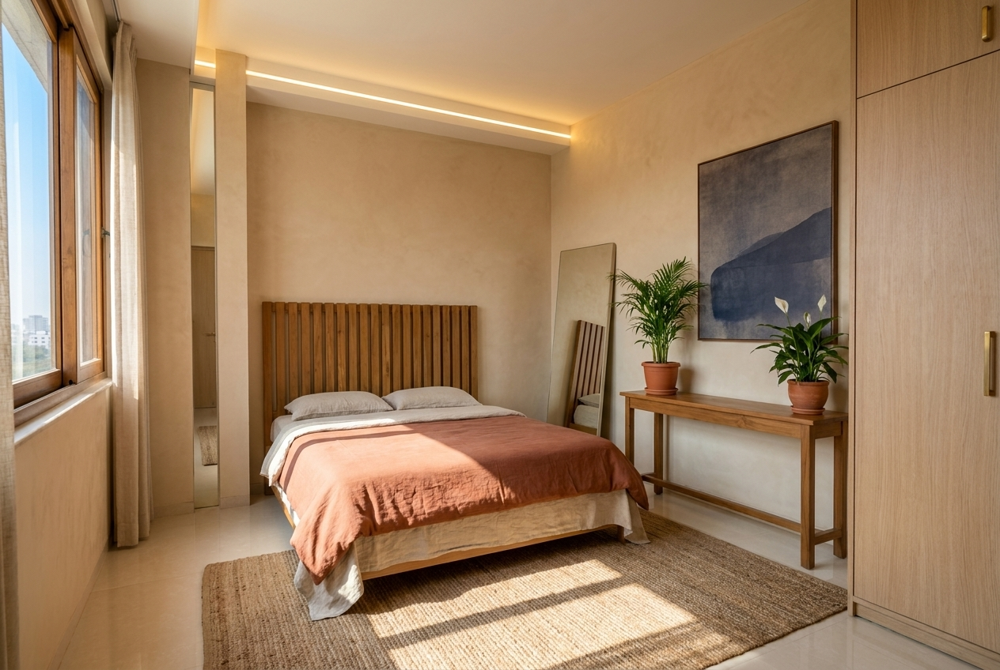
Bed head south, wardrobe + top storage as drawn, camouflage bath door retained (teak slats across the door plane), console + one large artwork — the flat's one muted-indigo moment.
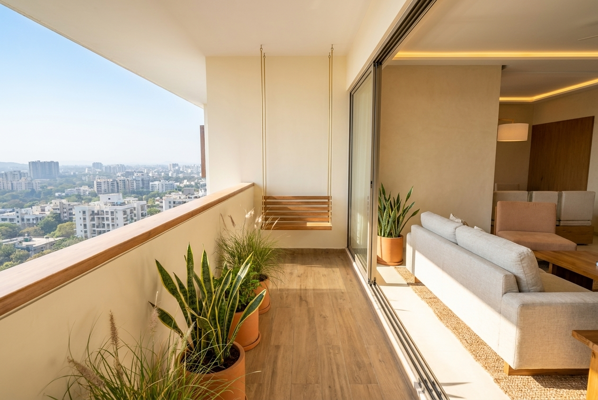
Porcelain deck tiles; heavy low planters only (hanging planters deleted); wind-tolerant species. Swing: slim bench at the south dead-end ONLY, slab-anchored after society NOC — else two cane easy chairs (decision B).
| Line | ₹ | Line | ₹ |
|---|---|---|---|
| Wardrobes ×2, kitchen reface, shoe cab, TV console, mandir joinery | 5,60,000 | Dining set + credenza | 1,10,000 |
| Lime plaster/limewash + emulsion | 1,90,000 | Beds, headboards, side tables, dresser, daybed | 1,55,000 |
| Lighting complete | 1,20,000 | Rugs ×3 | 65,000 |
| False ceiling (cove-only) | 1,25,000 | Curtains (sheer + blackout) | 95,000 |
| Electrical rework | 95,000 | Brass hardware family | 40,000 |
| Attunements screen + store + niche | 1,10,000 | Balcony (deck, planters, swing/chairs) | 70,000 |
| Stone + water wall + Buddha | 1,30,000 | Fans, art, ceramics, mirrors, plants | 85,000 |
| Sofa + 2 chairs | 1,30,000 | Subtotal · honest landing w/ 8% contingency | 19,80,000 · ≈21.4L |
If ₹20L is hard, cut in order: swing → credenza → study daybed → one rug → wet water wall becomes dry gravel. Never cut: the screen, lighting quality, conduits-before-plaster, the limewash sample.
Civil/plumbing (water-wall drain!) → electrical chase + conduit → close & cure → ceiling coves → 1m² limewash sample & sign-off → wall finishes → joinery → stone veneer → water commissioning → lighting → soft furnishing.
| # | Decision | Options | Recommendation |
|---|---|---|---|
| W | Water feature | wet sheet-flow (drainable spec) / dry gravel kare-sansui | Dry, unless weekly care is committed |
| M | Mandir altar wall | east (daylight-backed) / north (solid-back strict vastu) | East |
| B | Balcony south end | slim swing (NOC) / two easy chairs | Chairs unless NOC granted |
| TV | Size | 75″ / 65″ | 75″ (verified geometry) |
| S | Son's room TV | yes / no | His call |
Package: ~/pune-flat-interior/ · MASTER_PLAN.md (full detail) · verify/DIMENSIONS.md (measurement database + site-verify list) · research/ (evidence base + Pune sourcing shortlist) · renders/scene.py (regenerate any view).